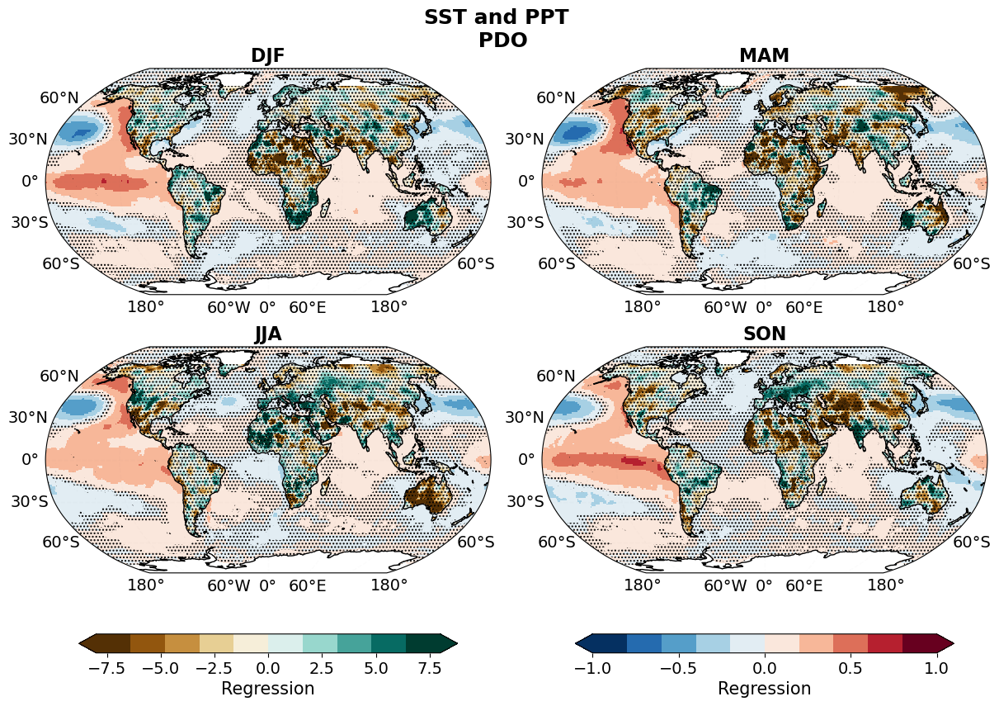

PDO
Pacific Decadal Oscillation
Analyze the influence of PDO on global hydroclimate variability.
PDO Long Term
1903–2023
Index & Power Spectrum
PDO Index and PSD (Long-Term)
Regression Analysis
Explore PDO impacts on hydroclimate over the century-plus record.

PDO Index & Power Spectrum (Short Term: 1980–2023)